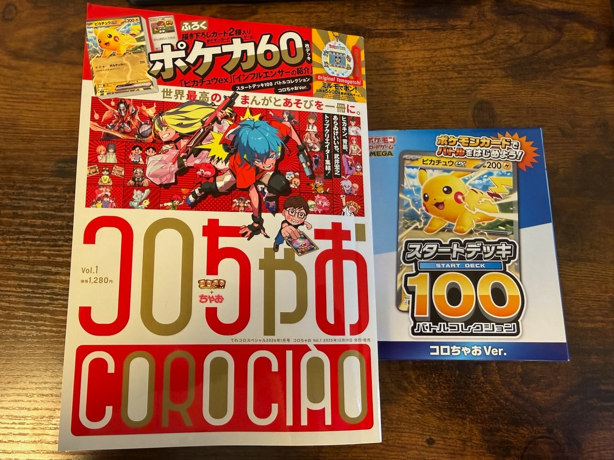
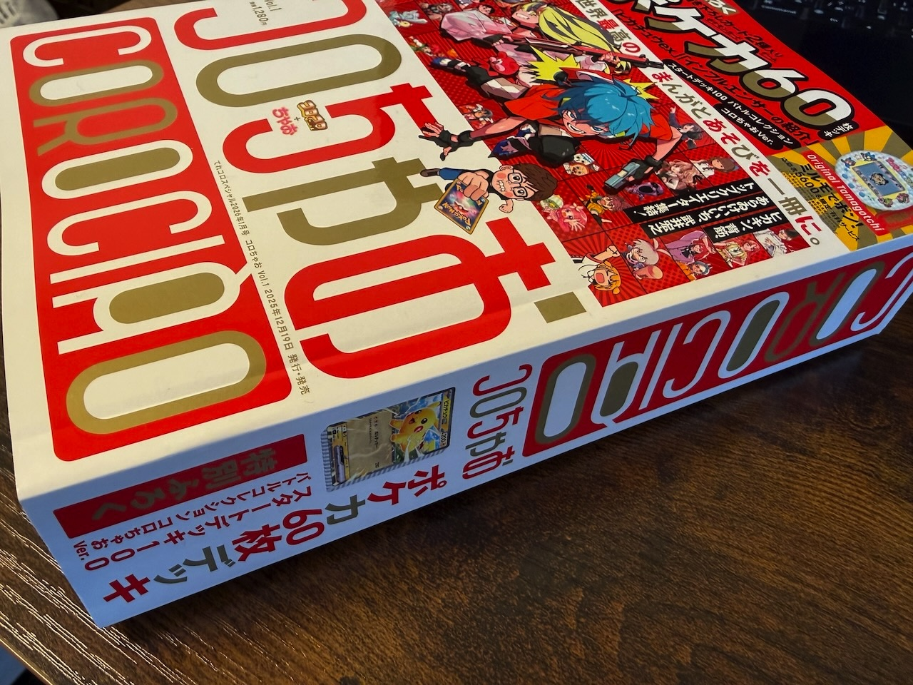
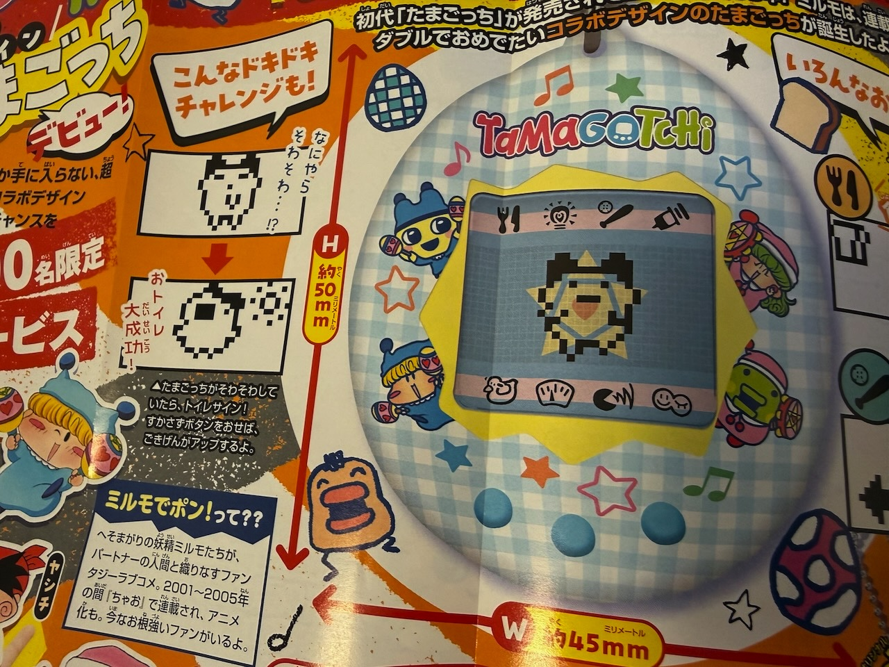

２０２５年１２月１９日に、小学館より『コロコロコミック』と『ちゃお』がコラボした新雑誌『コロちゃお』が発売されました！
我らがミルモとの関連性は、「ミルモでポン！」コラボデザインのOriginal Tamagotchiですね！
たまごっちのボディにミルモ・リルムが描かれ、さらにミルモ姿のまめっちと、リルム姿のくちぱっちが描かれるという、まさに夢の共演！
これはコロちゃおの付録ではなく、応募者有料限定サービス（3,800円・送料発送手数料込み）で、抽選で選ばれた5600人がゲットできるグッズとなっています。
ということで私の手元にはまだたまごっちはありませんが、無事にゲットできたらしっかりレポートしたいと思います。
う〜ん、どうか当選しますように・・＞＜（切実）
せっかくなので、今回はコロちゃおのレポートもしたいと思います。

通常のコロコロコミックサイズに、ポケモンカードの付録という超豪華付録がついていました。
ミルモのたまごっちは表紙の右上に描かれていますね。
「コロコロコミック」「ちゃお」のロゴが控えめなことより、既存の流れに乗っかり過ぎず、新しい漫画雑誌を開拓する意気込みを感じます。
ちなみに事前告知されてた画像では、表紙中央付近のヒカキンは？マークで隠されていましたが、そこにどんな大人の事情があったのかが気になります(^◇^;)

厚さはまさにコロコロコミックサイズ！
ページ数にして７４０ページ！
私は全ページ目を通しましたが、ボリュームあり過ぎて疲れました(^^;
どの漫画も第１話なので、設定などを理解しながら読むのにエネルギーを使うのでしょうね。
第１話以降はちゃおプラスなどのWeb媒体で続きますが、この先発売されるコロちゃおもすべてが第１話だと読む方はしんどいかも・・(^◇^;)
ちなみに私は、天才子役の永尾柚乃ちゃんが主役の『妖カツ！！』がかわいくておもしろくて、何度も読み直してしまいました。
それと、ちゃおでお馴染みのもりちかこ先生の『誘拐少女』。
ラストにスマホを使った大きな仕掛けが私の想像をはるかに超えていました。
あまりの怖さだったので、世間の反応がどうなのか気になります・・。
皆さんはどの漫画がお気に入りになりましたでしょーか？

こちらがミルモのたまごっちの紹介ページです（全部映すと問題起きそうなので一部で・・）
たまごっちの液晶画面にも妖精の魔法陣のマークが映っています！
それと、左下の「ミルモでポン！って？？」の紹介文に注目・・・今回のコロちゃおで一番の注目ポイントかもしれません(笑)
(2025/12/24)